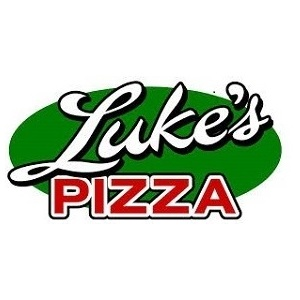
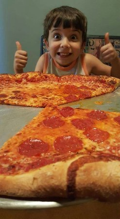
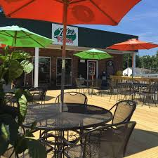

Call To Order
423-328-0186

Our Hours
- Monday-Thursday: 11am-10pm
- Friday-Saturday: 11am-11pm
- Sunday: Closed
Location
- 3111 W. Market Street
- Johnson City, TN 37604

Our Services
- - Indoor and Outdoor Seating (currently limited)
- - No-Contact Delivery
- - Drive Thru Available
- - Fresh Pizza by the Slice
- - Beer on Tap
- - Daily Specials